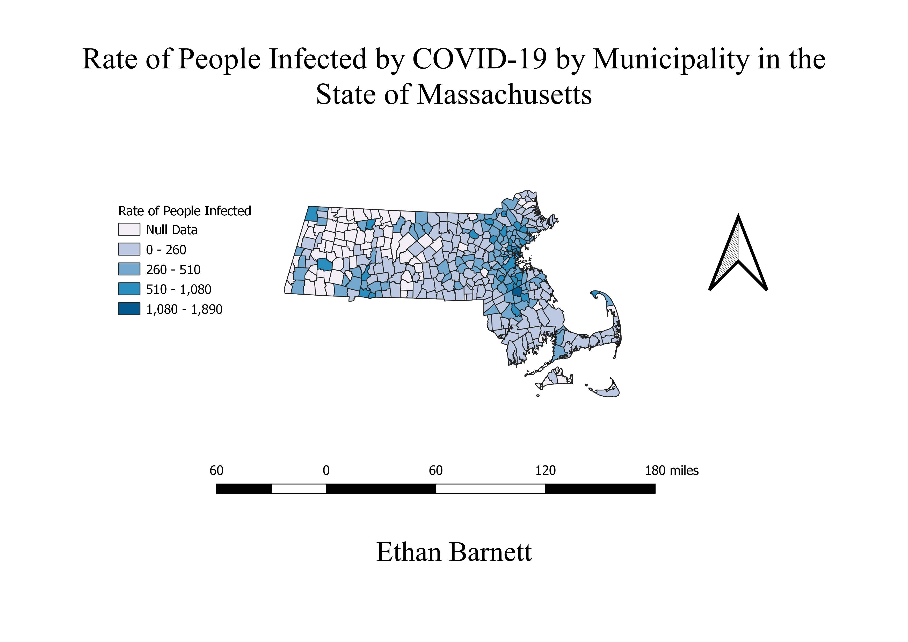

Homework 9: Rate of People Infected by COVID by Municipality in the State of Massachusetts
Ethan Barnett
This map shows the rate of people that are infected with the COVID virus by municipality in the state of Massachusetts. Since I have done all my other maps on the state, I figured I might as well continue that trend and make another. The reaosn I decided to do a choropleth on the virus is because it is something I really would like gone. I personally take all precautions that I need to, but I was curious to see what the rates were looking like in another state. I also decided to go with a data set that included cities rather than counties because I wanted more detail in the map. There are only 12 counties in the state of Massachusetts, so I felt it would be a lot more benificial to see the data set expressed with finer detail to be able to see the true rate of infection for the state.

Data used for this project
CSV dataset
Link to shapefile
Website Used for CSV